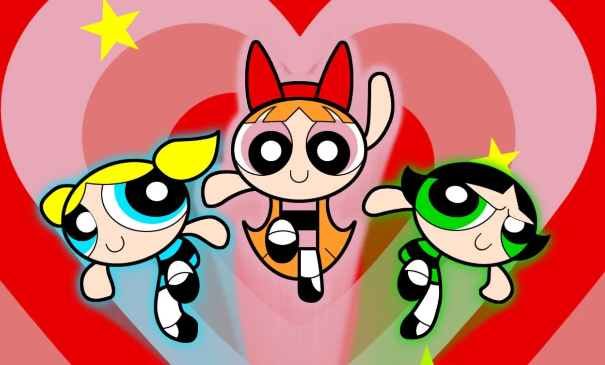

About Blossom
The most outgoing and intelligent of her sisters, Blossom is the Powerpuff Girls' natural leader. She is quick-thinking, logical, analytical and has a strong sense of justice. She is the one who comes up with new team maneuvers and directs the Girls in battle.
Blossom and her sisters
Blossom's characteristics
- She has orange hair
- She has a strong sense of justice
- She and her sisters defend their town from villains and giant monsters
Blossom's sisters
Each sister represents one of the three perfect ingredients: Bubbles, the blue one, is “sugar” and the cutest and most sensitive of the bunch; Buttercup, the green one, is “spice” and the tough tomboy; Blossom, the pink one, is “everything nice” and generally the leader of the three. Click on the links to read more about them: